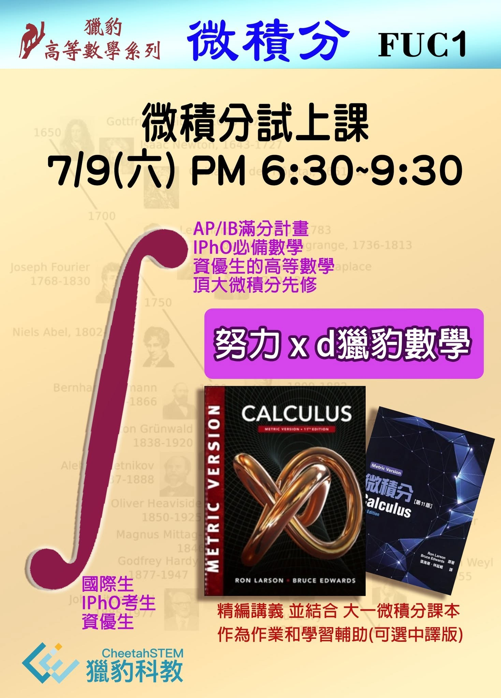
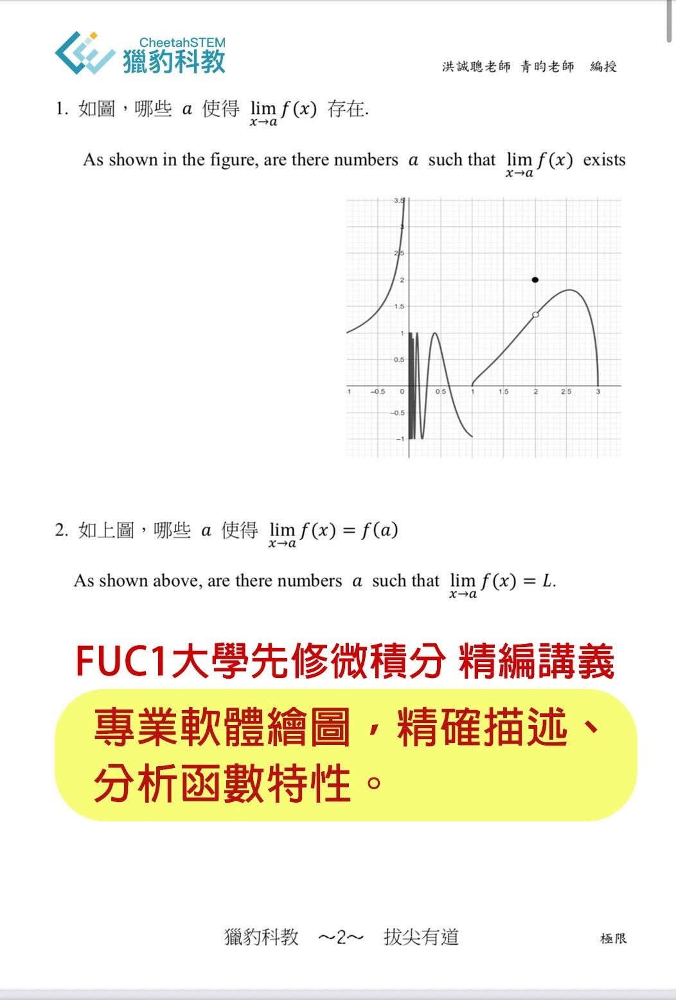
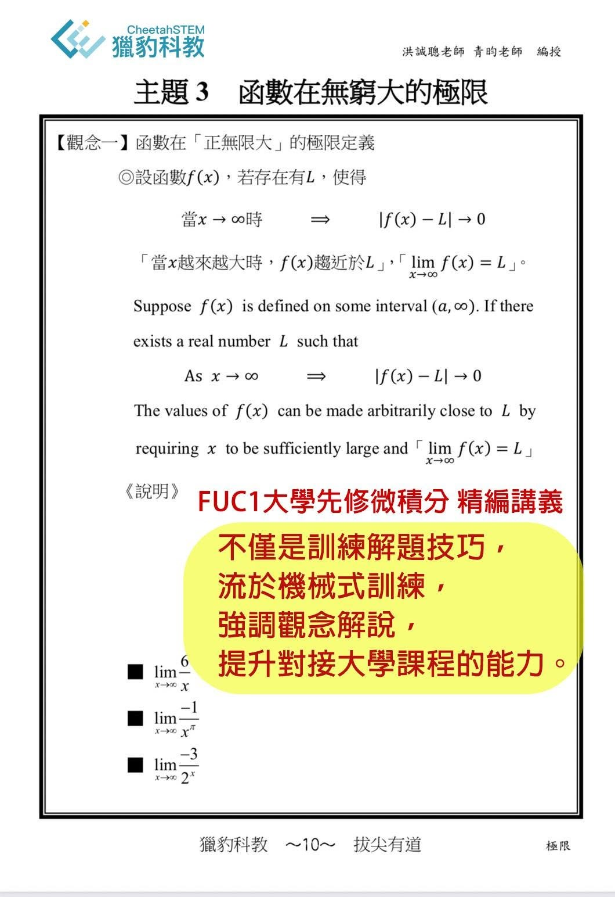
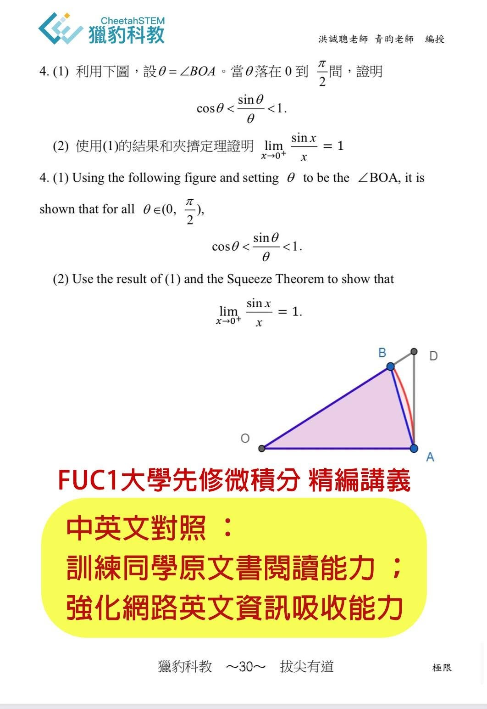
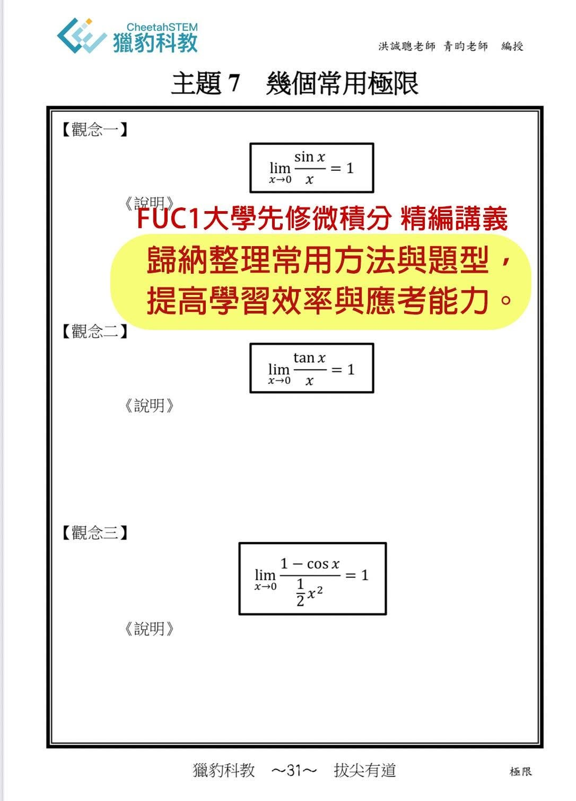

人類最偉大的數學發明，心靈最大的冒險，精神上的最高勝利～微積分
7/9(六)晚上PM 6:30~9:30
「微積分」是學習高深科學的入門磚。
近代的物理學是與微積分一起發展的，事實上牛頓就是因為研究萬有引力而發明了微積分。
非常令人興奮，有好幾位對科學有雄心壯志的國中生及國小學生挑戰了獵豹即將登場的「FUC1大學先修微積分課程」！
獵豹精編的微積分教材，也結合大一微積分課本作為作業和學習輔助，內容完整，取材多元，系統有條理，循序漸進，深入淺出，中英並列，不但彌補了台灣高中課程微積分內容深度與廣度的不足，也滿足AP,IB滿分為目標的需要。
對要挑戰物奧的同學而言，FUC1課程提供了完整的微積分需求！
有不少超修同學很想嘗試獵豹微積分的學習，但擔心無法勝任而裹足不前。
因此獵豹特別開放7/9(六)晚上PM 6:30~9:30第一堂課，讓熱愛學習的孩子們有機會嘗試。
參與體驗課的背景條件：
1.學習過「初等函數、多項式、指對數、三角函數、數列級數」。
2.熱愛學習，勇於探索，不怕困難。
FUC1大學先修微積分課程說明




